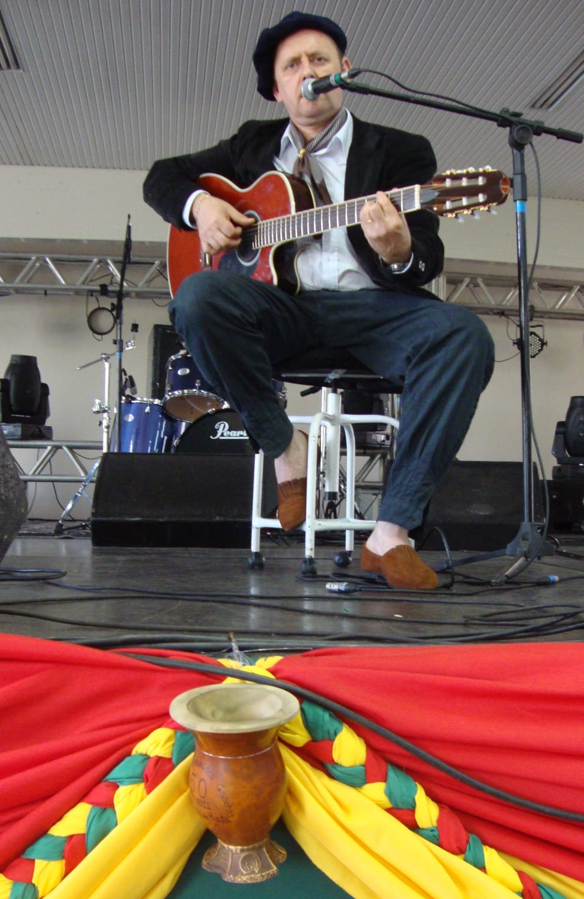

Saiba Mais
Paulo Cezar Lunardi reside em Nova Prata RS, é músico, compositor, professor, empresario e regente. Iniciou seus trabalhos em 1987 como instrutor musical no colegio Aparecida de Nova Prata. Atualmente trabalha como regente de corais e intrutor de violão, teclado e canto nas cidades de São Jorge, Guabiju, Nova Bassano e Nova Prata. É empresario no ramo de sonorizacao com a empresa PC SOM E LUZ, em casamentos, foramturas, festas de 15 anos e eventos corporativos.
